AHMED NASHWAN AHMED AL-MASWARY
AI250001
UML Modelling
BIK10803 Requirements Engineering
A premium requirements presentation showing how TEAM VOID transformed manual restaurant ordering into a clear digital system.
TEAM VOID
AI250001
UML Modelling
AI250036
Requirements Elicitation & Documentation
AI250042
SRS Documentation
AI250004
Project Leader

AI250032
Prototype Developer
01 / System Idea
Scan QR → View menu → Place order → Kitchen receives → Admin monitors.
Customer, Kitchen Staff, Admin / Manager.
Faster service, fewer mistakes, and better digital records.
Requirements Engineering documentation with UML support.
02 / As-Is Process
Manual writing and walking to the kitchen causes delay.
Handwriting or verbal mistakes can create wrong orders.
Paper slips can be missing, damaged, or unclear.
Management has no instant digital sales overview.
03 / Digital Solution
Each table has a unique QR code mapped to its table number.
Kitchen staff receive order details instantly.
Manager tracks orders, updates menu, and generates reports.
Orders are timestamped and stored for tracking and analysis.
04 / Context Analysis
Customer order, menu items, table numbers, order status, sales data.
Customers, restaurant staff, kitchen staff, admin/manager, future payment system.
Mobile devices, QR code system, web app, Kitchen Display System, Internet/Wi‑Fi.
Limited budget, semester time constraint, team skills, web technologies, iterative process.
05 / Elicitation Inputs
Customers, restaurant staff, kitchen staff, restaurant manager, and developers.
Project proposal, restaurant menu, manual order records, RE course materials, design references.
Manual ordering system, POS concept, online food apps, QR ordering systems, restaurant management systems.
Problems observed: slow ordering, paper errors, kitchen communication gaps, no digital records.
06 / System Boundary
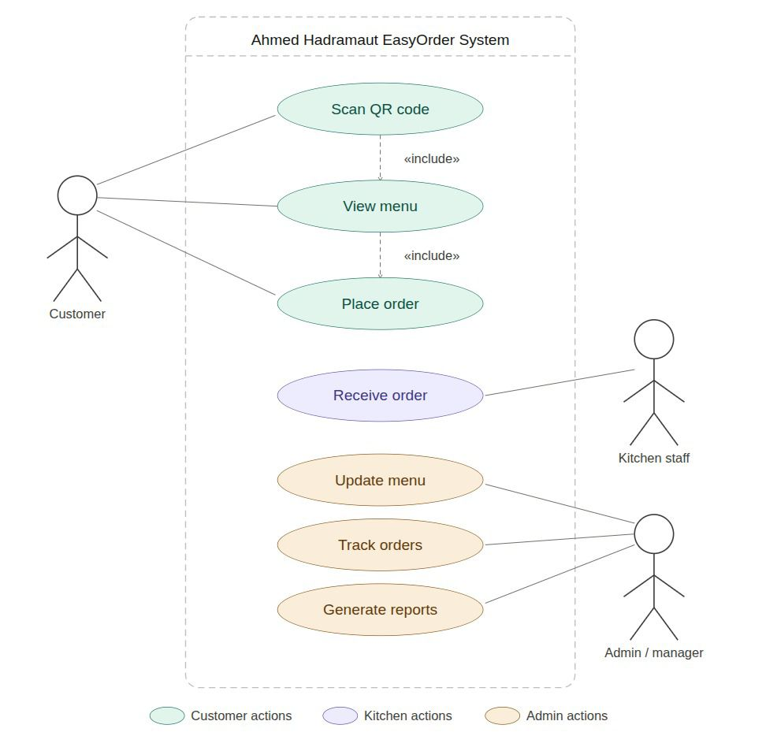
07 / Goals & Sub-Goals
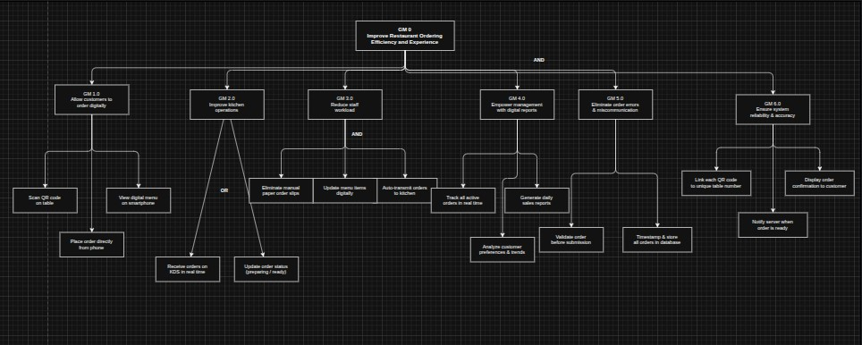
Improve restaurant ordering efficiency and experience.
Allow customers to order digitally through QR.
Reduce manual workload and receive orders instantly.
Track active orders and generate daily reports.
08 / Customer Use Case
Customer starts the ordering process from the table.
A valid QR code must be linked to a specific table number.
The system gets table number, displays menu, saves order details, and sends alert.
Order is saved with timestamp and transmitted to the kitchen.
Customer can adjust quantities or cancel before submitting.
If connection fails, system shows error and keeps selected items for retry.
09 / Diagram Space
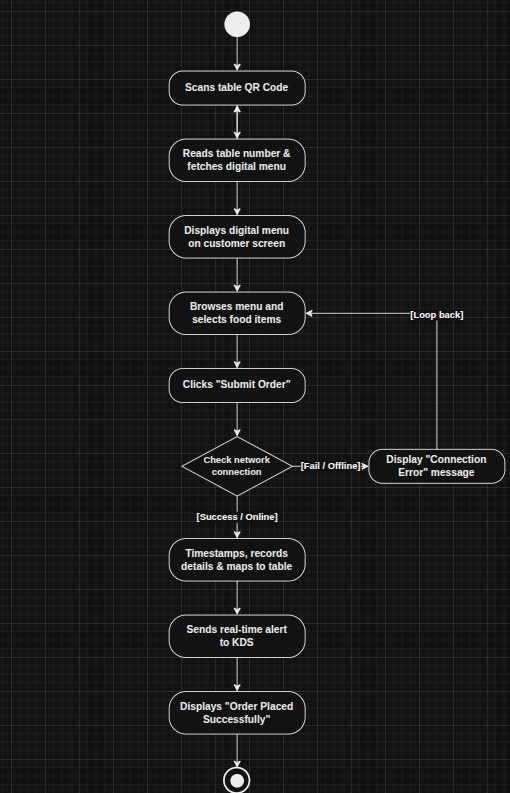
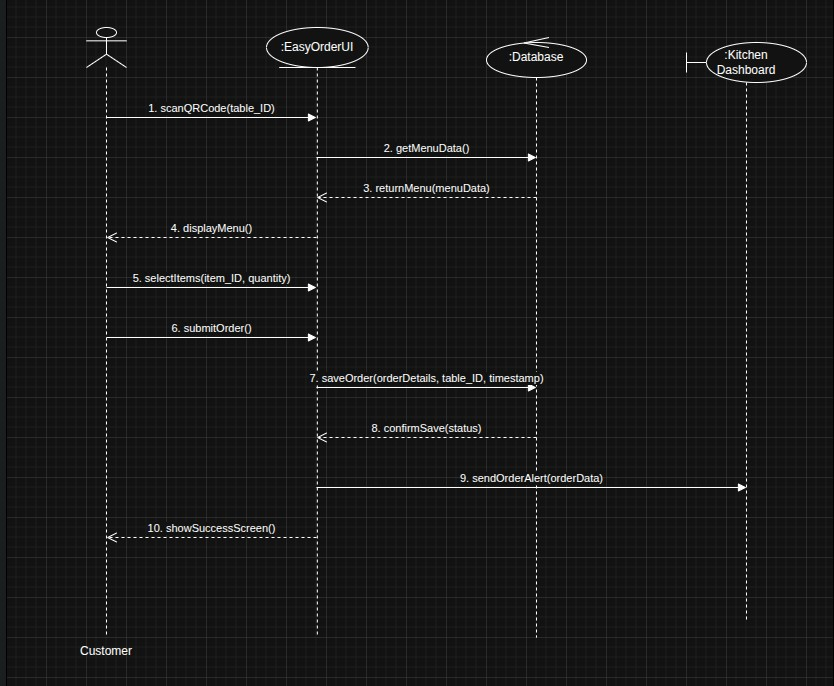
10 / Kitchen Use Case
Kitchen Staff receives the order through the Kitchen Display System.
A customer order has already been submitted successfully.
The system loads order ID, table number, items, quantities, notes, and timestamp.
Order status becomes Preparing and receive time/staff action are saved.
If staff does not confirm immediately, the order stays pending/new.
If details cannot load, system shows sync or missing-details message and asks retry.
11 / Diagram Space
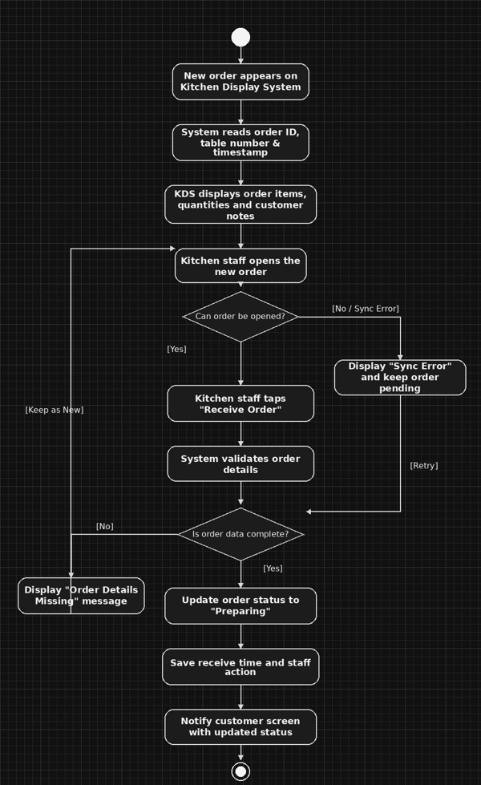
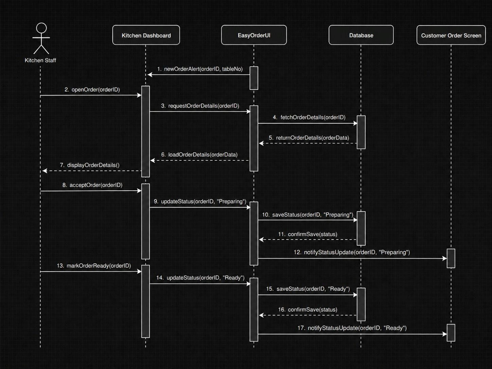
12 / Admin Use Case
Admin / Manager monitors order progress from the dashboard.
Track Preparing, Ready, and Completed orders in real time.
UI requests orders, controller retrieves data, and database returns current statuses.
Admin sees updated tracking details and current order status.
If no active orders exist, the system displays a no-orders message.
Auto-refresh repeats while the admin keeps tracking orders.
13 / Diagram Space
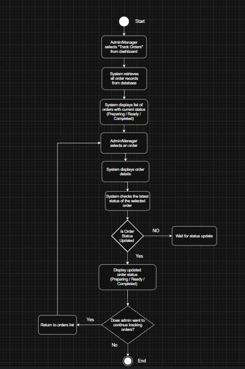
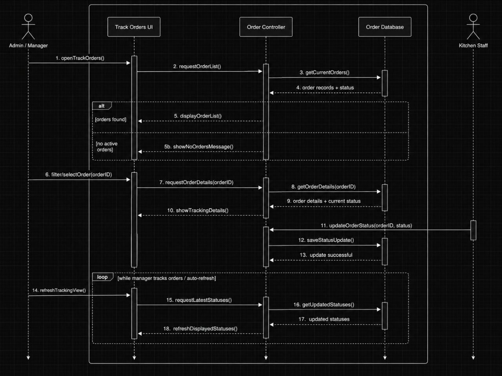
14 / Admin Use Case
Admin / Manager controls menu item data.
Admin must be logged in before changing menu information.
System shows current items, accepts the selected action, validates input, and saves changes.
The menu is updated and confirmation is displayed.
Admin can cancel update and return to dashboard.
Access denied if not logged in; validation error if data is incomplete or invalid.
15 / Diagram Space
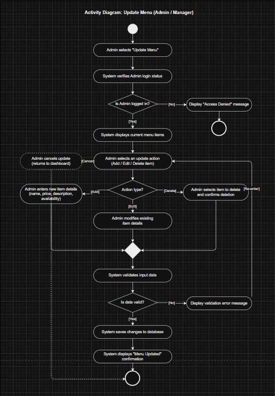
16 / Admin Use Case
Admin / Manager generates sales and order reports.
Digital order and sales data must exist in the database.
System validates date range, retrieves order/sales data, processes data, and builds the report.
Generated report is displayed for management review.
Admin can change report type or date range.
Invalid date range displays error and returns user to date selection.
17 / Diagram Space
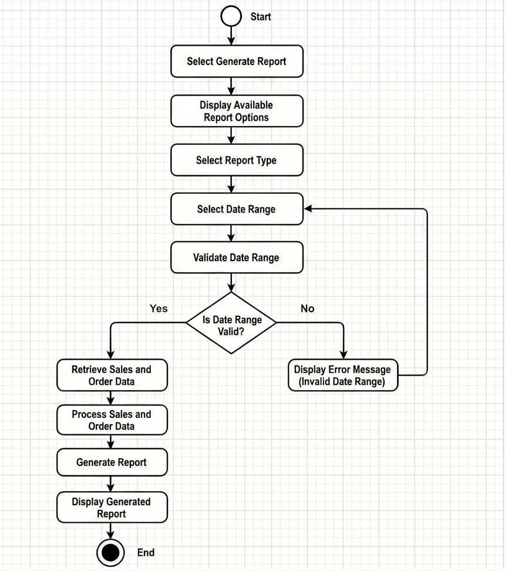
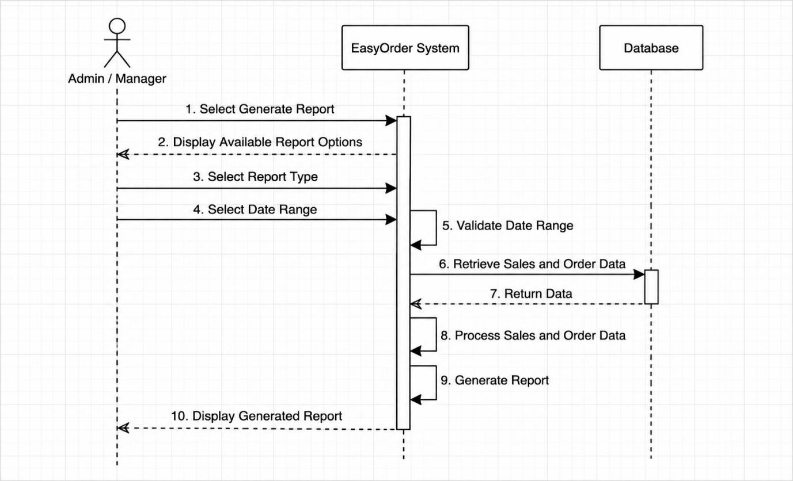
18 / What the system shall do
Show menu, get table number, save order, send order to KDS, update order status, update menu, track orders, and generate reports.
No online payment in the initial version, no delivery orders, no inventory monitoring, and customer cannot manually edit table number.
Real-time KDS transmission, exception handling, reliable status display, and user-friendly retry behavior.
Basic and performance priorities help the team decide what must be implemented first.
19 / Requirement Mapping
Digital menu, QR table mapping, save order, submit to KDS.
KDS alert, order details, kitchen confirmation, status update.
Track current orders, refresh statuses, update menu items.
Validate filters, retrieve data, process sales/order data, display report.
20 / Project Deliverables
User Requirements Definition with purpose, scope, As-Is, To-Be, and business rules.
Detailed Software Requirements Specification with use cases and requirement IDs.
Main system actors and use cases for Customer, Kitchen Staff, and Admin/Manager.
Workflows for place order, receive order, update menu, and generate report.
Interaction flows between actors, UI, controller, database, KDS, and customer screen.
Business goals and sub-goals for efficiency, reliability, and better customer experience.
21 / Project Value
22 / Final Summary
BIK10803 Requirements Engineering
Dr.Puan Ruhaya Binti Ab.aziz
Ahmed Hadramaut EasyOrder System